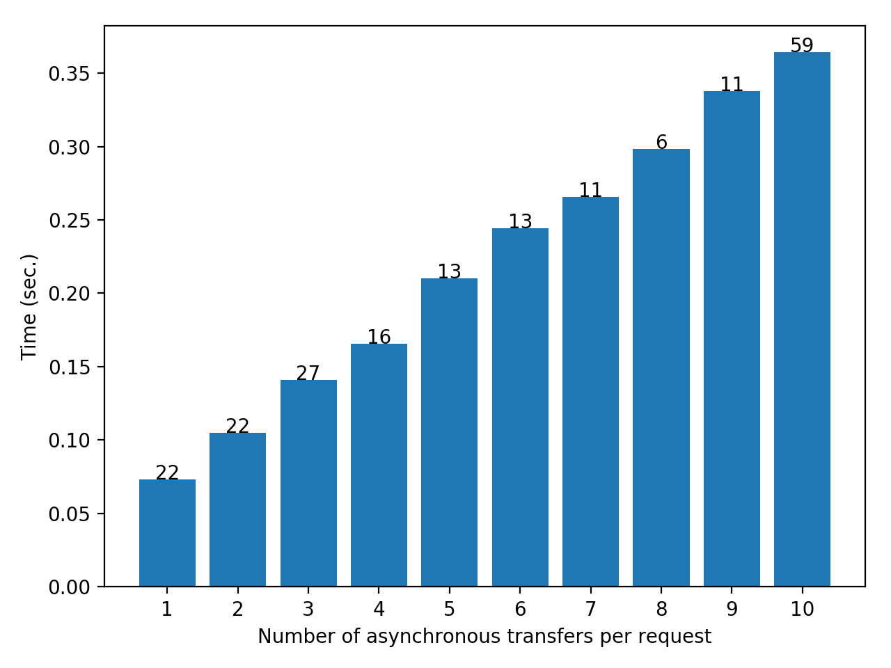
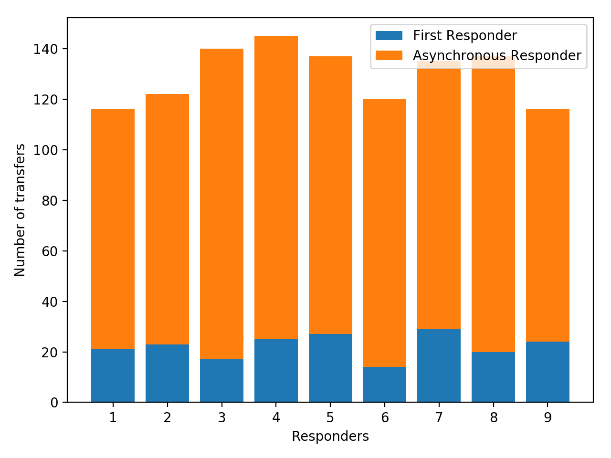
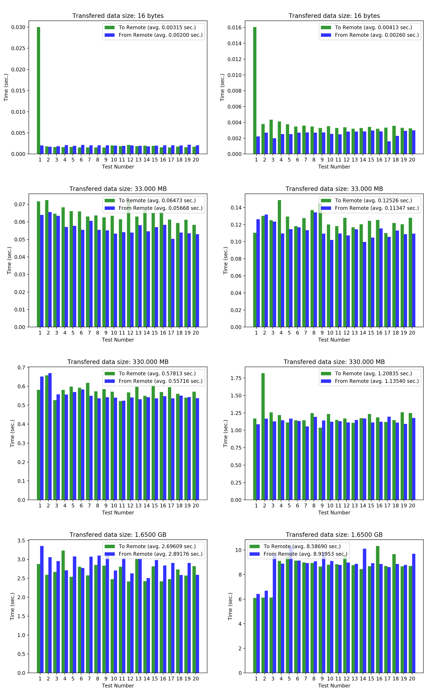
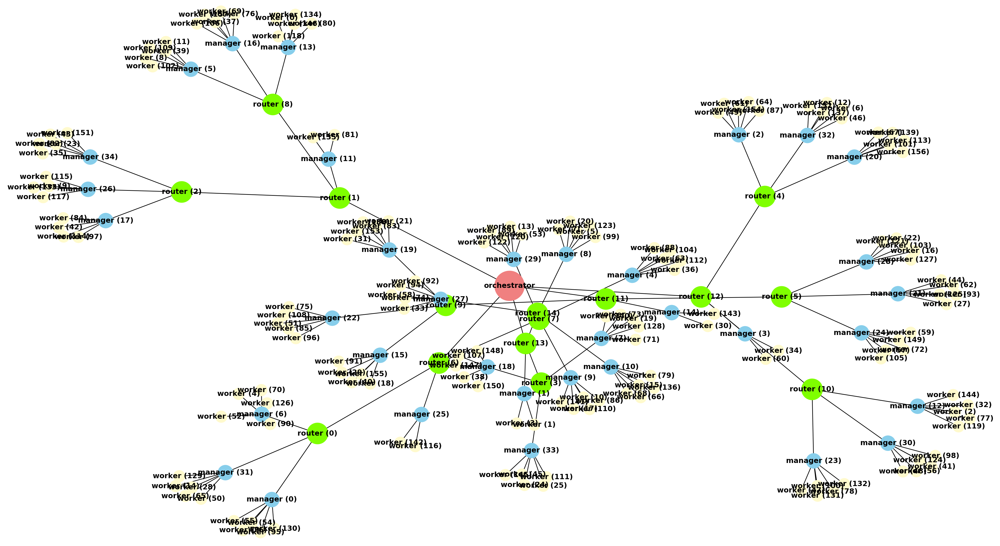
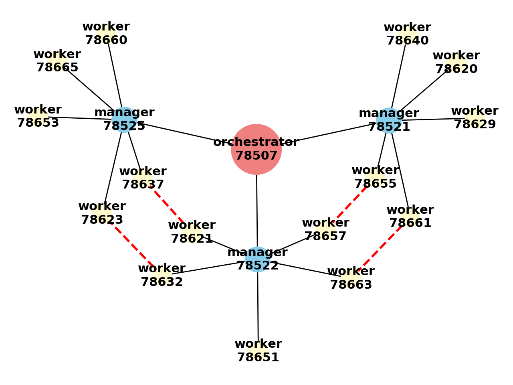

Welcome to the next generation 5G and post 5G computing¶
softgrid is a resource orchestration implementation to executing any type of computation on a grid of connected comodity hardware. It’s the perfect hybrid solution to distributing data and computation tasks that allows maximizing data availability and transfer speed without affecting the scalability of the performed calculation. In a world evolving towards extremely low latency and fast data transfer rate network infrastructures (e.g. 5G and post 5G) and abundance of computation resources availability, applications should be enabled to take advantage of such infrastructure and tailor the required performance. softgrid is a very powerful and light weight implementation that allows creating any soft grid structure of executors on any connected grid of computation hardware (local and remote) without the need to configure or install any piece of software on local or remote machines. softgrid is very flexible to the point where any computation graph can be created in short and razor sharp softgrid api calls.
Implementations like softgrid, are the only hope to enable third party entites to leverage and use complex networks (5G and post 5G) with minimal implementation that can be developed on local and personal machines and then indefinitely expanded to the global network without touching a line of code or having to install any piece of software on remote network machines.
softgrid also allows performing embarrasingly parallel independant computations as well as synchronous and asynchronous type of computations on the grid workers. No need to mention that traditional map-reduce jobs are also possible and performed at a breeze
softgrid is not a rigid software infrastructure even at runtime. A user can scale up and down and change the structure of the grid by lunching or disconnecting and shutting down executors or machines.
Finally, softgrid can be used without any effort on any cloud infrastructure and leverage the scallability of the resources real time.
Nomenclature:¶
- Orchestrator: This is the main executor of the grid and it has to be launched to create the grid. ORCHESTRATOR PROCESS IS NOT SUPPOSED TO RUN HEAVY COMPUTATIONS BUT SHOULD BE USED FOR GRID TRANSACTION PURPOSES
- Router: This is a simple routing executor that is used to split and bifurcate the grid and create multiple grid branches and nodes. ROUTER PROCESS IS NOT SUPPOSED TO RUN HEAVY COMPUTATIONS BUT SHOULD BE USED FOR GRID TRANSACTION PURPOSESS
- Manager: This is the executor that manages workers. A manager and its workers are supposed to be running on the same physcial machine. MANAGER PROCESS IS NOT SUPPOSED TO RUN HEAVY COMPUTATIONS BUT SHOULD BE USED FOR GRID TRANSACTION PURPOSES
- Worker: This is the worker of the grid where heavy computations should be made.
- gridUniqueName: Every executor when launched and connected to the grid will get attributed its own and unique grid name which can be accessed using gridUniqueName property of the executor instance. A gridUniqueName is afterall a formatted string of the following format: “role|name@address[pid]:port” where role is the executor type (orchestrator, router, manager, etc.), name is the executor name given by the user upon instanciation, address is the machine ip address, pid is the process id on the machine and port is the port of communication between the executor and its upgrid. When allowed, an executor can transfer data to a target executor on the grid using the target gridUniqueName.
- upgrid & downgrid: An executor (let’s call it A) is connected to the grid through another grid executor (let’s call it B). In this case B is the upgrid of A because it connects A to the grid and it’s one executor or one transfer step closer to the orchestrator than A. Every connected executor has a unique upgrid except the Orchestrator that has no upgrid because it’s the main entry to the grid. Keeping the same logic, A is a downgrid of B because because it’s one executor or one transfer step away from the orchestrator than B. Except for workers that are the end point of the grid and have no downgrids, executors can have more than one downgrid but always one upgrid.
- bridge: A bridge is a special direct connection between grid distant executors.
- gridPath: Every executor has it’s own gridPath that is a list of all directly connected executors gridUniqueName from the orchestrator to the executor itself.
Usage:¶
- On local machine to scale up computations
- On cloud services to leverage hexa-scale computation
- By IOT devices connected to fast network (5G and post 5G) to get fast response upon tasks that require heavy computations or on demand distributed data availability
A softgrid grid instance is hardware independant and realtime size adjustable. Using softgrid, connected IOT devices can communicate with the network towers to perform swift low latency computations while getting and pushing updates and computations to cloud services, at home personal devices or to a business data center. For heaving computation demanding tasks, grid nodes and connection bridges can be created and later on decommissioned and destroyed as needed.
-
softgrid.get_version()¶ Get softgrid’s version number.
Get softgrid’s author’s name.
-
softgrid.get_email()¶ Get softgrid’s author’s email.
-
softgrid.get_doc()¶ Get softgrid’s official online documentation link.
-
softgrid.get_repository()¶ Get softgrid’s official online repository link.
-
softgrid.get_pypi()¶ Get softgrid’s pypi link.
softgrid.Globals¶
softgrid Globals contains all softgrid main global variables including default and machine specific rules.
The easiest way to alter the grid rules is by updating Globals.RULES prior to intializing the Orchestrator.
-
class
softgrid.Globals.Logger(*args, **kwargs) Bases:
pysimplelog.SimpleLog.SingleLoggerThis will work across the whole application on all machines
-
custom_init(*args, **kwargs) Custom initialize abstract method. This method will be called at the end of initialzation. This method needs to be overloaded to custom initialize Logger instances.
Parameters: - *args (): This is used to send non-keyworded variable length argument list to custom initialize.
- **kwargs (): This is keyworded variable length of arguments. kwargs can be anything other than __init__ arguments.
-
softgrid_log(logType, message, gridUniqueName='role:name@address', utcTime=None, data=None, tback=None)
-
softgrid.Core¶
softgrid Core module contains all executors base implementations and definitions.
-
class
softgrid.Core.GridBase Bases:
objectGridBase declares and handles all general properties of the excutor. Some of the defined properties are only defined in GridBase but must be handled in GridBase children. All os signal hadlers are defined in GridBase. GridBase instanciation is forbidden.
-
applicationName Application name
-
gridPath Grid path to get to this object for Orchestrator
-
gridUniqueName grid executor grid unique name
-
role Excuctor role which can be Orchestrator, Router, Manger, etc.
-
pid Process id
-
address Machine address
-
port Executor communication port number
-
portFetch Whether to smartly fetch for available port
-
password Server communication password
-
name Executor name given by user
-
softgridVersion get softgrid used version
-
uniqueName Unique name given to all grid base instances upon instanciation
-
UTCStartTime Executor instantiation time
-
startDateTime Executor instantiation date time
-
passwords Dictionary copy of downgrid executors server password. e.g.
{'managers': {}, 'routers': {'router|Router@135.210.224.198[1234]:5002': 'd3656182-a486-11e8-846c-f45c89c22ebf', 'router|Router@emote.machine.com[1235]:5000': 'f206112c-a486-11e8-9cf5-fa163ecc0309'}, 'workers': {}}
-
paths Copy of executors grid unique path. e.g.
{'manager': {}, 'router' : {'router|Router@135.210.224.198[1234]:5002': ['orchestrator|Orchestrator@135.210.224.198[1236]:5001'], 'router|Router@emote.machine.com[1235]:5000': ['orchestrator|Orchestrator@135.210.224.198[1236]:5001']}, 'worker' : {}}
-
routers Downgrid routers grid unique name sorted by ‘downgrid_acknowledge_utctime’
-
managers Downgrid managers grid unique name sorted by ‘downgrid_acknowledge_utctime’
-
workers Downgrid workers grid unique name sorted by ‘downgrid_acknowledge_utctime’
-
kill() Abruptly Kill executor by sending os kill signal. Calling kill result in forcefully stopping current process python execution and all executor’s downgrid will disconnect from grid.
-
disconnect(kill=None, killLocalDowngrids=True) Disconnect executor from grid. All downgrids will be disconnected as well and those running on the same machine will be terminated with an os kill signal automatically if killLocalDowngrids is set to True. If running in non-interactive mode, an executor will kill itself upon disconnecting from grid. Interactive mode is True if executor is launched from a user terminal.
Parameters: - kill (None, Boolean): whether to kill process. If None is given then kill will be set True if session is not interactive
- killLocalDowngrids (boolean): whether to os signal kill locally running downgrids
-
log_and_transfer(logType, message, tback=None, *args, **kwargs) Template method to log and transfer logging to upgrid chain. Calling this template will result in printing log message and traceback to standard output only. Full log and transfer implementation is defined in TransferBase.
Parameters: - logType (string): the log type e.g. info
- message (string): the log message
- tback (None, str): the log traceback
-
transfer_to_executor_and_log(receiver, logType, message, tback=None, *args, **kwargs) This is a template method that is meant to transfer a certain log to a different executor and start the logging chain at that executor. This template implementation will simply call ‘log_and_transfer’ and it is overloaded in TransferBase
Parameters: - receiver (string): executor grid unique name to transfer log to
- logType (string): the log type e.g. info
- message (string): the log message
- tback (None, str): the log traceback
-
split_grid_unique_name(gridUniqueName) Split grid unique name into its different components. Raises an error if provided grid unique name is not formatted right.
Parameters: - gridUniqueName (str): grid unique name
Returns: - role (str): grid executor role
- name (str): grid executor name
- address (str): grid executor machine address
- pid (int): grid executor machine process PID
- port (int): grid executor server machine assigned port
-
add_object(name, obj, replace=True) Add object to grid executor
Parameters: - name (string): object name
- obj (dict, string): object in string dumps format or a dictionary of ‘object’ key and string dumps format value and ‘loads’ key with loads module name ‘cPickle’,’pickle’ or ‘dill’
- replace (boolean): Whether to replace data when existing
Returns: - status (Collections.SoftgridStatus): Operation success or failure status.
-
get_object(name, default=None, serialize=False, mustExist=True) Get object from grid executor
Parameters: - name (string): object name
- default (object): default object to return in case data does not exist
- serialize (boolean): whether to serialize object prior to returning
- mustExist (boolean): whether object name must exist
Returns: - object (object, Collections.SoftgridStatus): object defined under given name. If failed, SoftgridStatus will be returned.
-
pop_object(name, default=None, serialize=False, mustExist=False) Pop and return object from grid executor
Parameters: - name (string): object name
- default (object): default value to return in case object does not exist
- serialize (boolean): whether to serialize prior to returning
- mustExist (boolean): whether object name must exist
Returns: - object (object, Collections.SoftgridStatus): poped object defined under given name. If failed, SoftgridStatus will be returned.
-
add_data(name, data, replace=True) Add data to grid executor
Parameters: - name (string): data name
- data (object): data object
- replace (boolean): Whether to replace data when existing
Returns: - status (Collections.SoftgridStatus): Operation success or failure status.
-
get_data(name, default=None, mustExist=True) Get data from grid executor
Parameters: - name (string): data name
- default (object): default value to return in case data does not exist
- mustExist (boolean): whether data name must exist
Returns: - data (object, Collections.SoftgridStatus): Data object defined under given name. If failed, SoftgridStatus will be returned.
-
pop_data(name, default=None, mustExist=False) Pop and return data from grid executor
Parameters: - name (string): data name
- default (object): default value to return in case data does not exist
- mustExist (boolean): whether data name must exist
Returns: - data (object, Collections.SoftgridStatus): Poped data object defined under given name. If failed, SoftgridStatus will be returned.
-
add_file(name, path, data, root='temporary', writeFunc=None, wargs=None, wkwargs=None, readFunc=None, replace=True) Add file to machine local drive given a reference name, path, data, write and read functions.
Parameters: - name (string): file name to refer to during execution.
- path (string): relative path to given root in local machine to write file
- data (None, object): file data to write to disk using writeFunc or open(path).write mehtod. If None is given, then a file in absolute path must exist. Setting data to None is used to add file to multiple executors in the same machine.
- root (None, str): root of path to where to write the file. If None then given path is absolute. Otherwise it must be either ‘’ which is equivalent to None or ‘temporary’ or ‘permanent’ so data path will be relative to respectively temporary or permanent directory.
- writeFunc (None, str, dict, callable): writing file function. if given, first argument must be the data and the second argument the file path.
- wargs (None, list): write function func list of arguments
- wkwargs (None, list): write function func dictionary of keyword arguments
- readFunc (None, str, dict, callable): reading file function. If given, first argument must be reserved for the file path.
- replace (boolean): Whether to replace file when existing and all file names pointing to the replaced file will be automatically removed.
Returns: - status (Collections.SoftgridStatus): Operation success or failure status.
-
get_file(name, rargs=None, rkwargs=None, default=None, mustExist=True) Get softgrid stored file from local drive.
Parameters: - name (string): file name as refered to in executor.
- rargs (None, list): read function func list of arguments
- rkwargs (None, list): read function func dictionary of keyword arguments
- default (object): Default value to return in case file does not exist
- mustExist (boolean): Whether data name must exist
Returns: - data (object): File value as read using open(path).read or using defined readFunc. If failed to getting file SoftgridStatus will be returned.
-
pop_file(name, rargs=None, rkwargs=None, default=None, mustExist=True, delete=False) Pop and return softgrid file data from grid executor.
Parameters: - name (string): file name as refered to in executor.
- rargs (None, list): read function func list of arguments
- rkwargs (None, list): read function func dictionary of keyword arguments
- default (object): default value to return in case file does not exist
- mustExist (boolean): whether data name must exist.
- delete (boolean): whether to delete file on disk as well
Returns: - fileParams (dictionary, Collections.SoftgridStatus): file parameters with ‘data’ key added. If failed, SoftgridStatus will be returned.
-
add_udf(name, func, firstArgExecutor, replace=True) Add user defined function to grid executor
Parameters: - name (string): user defined function unique name to refer to. If given func is a string definition of the function then name must be the funtion name as defined in the func string
- func (callable, string): Callable or function source code to compile.
- firstArgExecutor (boolean): Whether func first argument must be the executor object. Executor object is remote therefore it can’t be passed among fargs or fkwargs. This flag allows the executor executing func to pass self as first argument to func followed by *fargs and **fkwargs
- replace (boolean): Whether to replace function when existing.
Returns: - status (Collections.SoftgridStatus): Operation success or failure status.
-
get_udf(name, default=None, mustExist=True) Get function from grid executor.
Parameters: - name (string): function name.
- default (object): default value to return in case function does not exist
- mustExist (boolean): whether function name must exist.
Returns: - function (object): Function defined under given name. If failed, SoftgridStatus will be returned.
-
pop_udf(name, default=None, mustExist=False) Pop and return function from grid executor.
Parameters: - name (string): Function name
- default (object): Default value to return in case function does not exist
- mustExist (boolean): Whether function name must exist
Returns: - function (object, Collections.SoftgridStatus): poped function defined under given name. If failed, SoftgridStatus will be returned.
-
add_package(packageDict, relativeRoot='', description='', sitePackages='temporary', replace=False) Add user defined package or module to importable definitions
Parameters: - packageDict (dictionary): module or package dictionary as created using softgrid.Collection.read_files function.
- relativeRoot (string): name of directory (package) under which to store the module or package files. If empty, files and directories will be created directly under site-packages.
- description (None, string): some description that will be used as SoftgridStatus return name.
- sitePackages (string): designate where to store the package. It must be any ‘temporary’, ‘permanent’, ‘user’ or ‘memory’.
- replace (boolean): Whether to replace package or module if existing.
Returns: - status (Collections.SoftgridStatus): Operation success or failure status.
-
-
class
softgrid.Core.MachineManagement(rules=None, *args, **kwargs) Bases:
softgrid.Core.GridBaseMachineManagement defines softgrid machines management at every executor. It enables every deployed executor to be aware of its environment and platform. Rules can be set for every machine and deployed softgrid executor. If machine rules are not given, default rules will be applied automatically from softgrid.Globals.RULES dictionary.
In order to customize a grid, it’s preferable to set machine rules before launching any executor.
Parameters: rules (None, dict): rules and parameters given to local and remote machines.
{'machine_maximum_number_of_managers': 1, 'machine_maximum_number_of_routers': None, 'machine_maximum_number_of_workers': None}
-
machines Copy of executor downgrid machines and softgrid executors dictionary. e.g.
{'135.210.224.198': {'manager': [], 'machine_number_of_cpu': 8, 'router': ['router|Router@135.210.224.198[1234]:5001', 'router|Router@135.210.224.198[1235]:5002'], 'worker': []}, 'remote.machine.com': {'manager': [], 'machine_number_of_cpu': 12, 'router': ['router|Router@zremote.machine.com[12345]:5000'], 'worker': []}}
-
machineNumberOfCores Number of cores on current machine
-
machinesAddress Executor downgrid machines addresses list
-
rules Copy of rules dictionary set by the executor e.g.
{'overload_machine_rules': {}, 'machine_maximum_number_of_managers': 1, 'machine_maximum_number_of_routers': None, 'machine_maximum_number_of_workers': -1, 'execution_allow_negative_priority': True, 'execution_allow_none_priority': True, 'log_manager_kwargs': {'logToFile': False, 'logToStdout': True, 'stdoutMaxLevel': None}, 'log_orchestrator_kwargs': {'logFileBasename': 'softgrid_application_2019-09-26-07-41-36', 'logToFile': False, 'logToStdout': True, 'stdoutMaxLevel': None}, 'log_router_kwargs': {'logToFile': False, 'logToStdout': True, 'stdoutMaxLevel': None}, 'log_worker_kwargs': {'logToFile': False, 'logToStdout': True, 'stdoutMaxLevel': None}, 'orchestrator_allow_managers': True, 'orchestrator_allow_workers': True, 'timeout_long': 20, 'timeout_long_multiplier': 3, 'timeout_short': 5, 'timeout_short_multiplier': 3, 'transfer_collect_sleep_time': 0.001, 'transport_implementation': 'multiprocessing'}
-
get_machine_rules(address) Get copy of machine rules given its address. Default rules are returned if machine rules are not specified
Parameters: - address (str): Machine address.
Returns: - rules (dict): Copy of machine rules dictionary.
-
set_machine_rules(address, rules) Set machine’s rules. If machine is already in grid chain then new rules are tested to see if they are valid with current machine state. If not then rules are rejected.
Parameters: address (str): Machine address.
rules (dict): Machine new rules. Some of rules keys are:
- machine_maximum_number_of_routers (None, integer): Maximum number of routers allowed on machine. If None, then unlimited number of routers can be launched on machine.
- machine_maximum_number_of_managers (None, integer): Maximum number of managers allowed on machine. If None, then unlimited number of managers can be launched on machine.
- machine_maximum_number_of_workers (None, integer): Maximum number of workers allowed on machine. If None, then as many workers as number of physical cpu cores on machine. If negative integer is given then this will be substracted from machine number of physical cpu cores.
-
get_machine_info(address) Get machine grid information.
Parameters: - address (str): Machine address.
Returns: - info (dict): Machine information dictionary.
-
get_remaining_executors_allowed(address) Get remaining allowed number of routers, managers and workers on machine as given in this executor rules
Parameters: - address (str): Machine address.
Returns: - allowed (dict): Machine information dictionary.
e.g.
{'number_of_routers': 0, 'number_of_managers': 1, 'number_of_workers': 7}
-
class
softgrid.Core.TransferBase(*args, **kwargs) Bases:
softgrid.Core.MachineManagementTransferBase inherits MachineManagement and defines all transfer methods, properties and definitions. This class defines all transfer method that allow executors to communicate between each other and allow user to interact with local and remote grid executors. Instanciation of this class is forbidden
-
get_managers_to_workers_receivers_bounce_lists() Get downgrids managers receivers and respective workers as bounce list of lists
Returns: - receivers (list): List of downgrid managers grid unique names
- bounce (list): List of lists of downgrid workers grid unique names
-
get_transfer_template(func=None, args=None, kwargs=None, priority=1, bounce=None, promisePassword=None, returnResult=True, storeResult=False, resultName=None) Get transfer prefilled dictionary data template.
Parameters: - func (None, str, callable): Function to execute remotely. Default value is None but this will raise an error if not set correctly.
- args (None, tuple, list): Function func arguments.
- kwargs (None, tuple, list): Function func keyword arguments.
- bounce (None, str, list): Bounce is used to bounce transfer to multiple receiver after reaching initial receiver. This is ultimately used to transfer to workers that are managed by the same manager. If not None, bounce must be a list of the same length as the normalized number of receivers. bounce list can contain None, grid unique names of sublists of grid unique names.
- priority (None, number): Execution queue priority.
- promisePassword (None, str): Execution job promise password.
- returnResult (None, str): Whether to execute function ‘func’ on remote executor and return back the result.
- storeResult (None, str): Whether to execute function ‘func’ on remote executor and store it on local executor.
- resultName (None, str): result handling name. If None, when returnResult is True, returned result will not be stored but logged instead.
Returns: - template (dict): Transfer dictionary prefilled template of all
of the following key value pairs:
- mode: transfer mode which should be ‘execute’
- propagate_upgrid: whether to propage to executor upgrid
- propagate_routers: whether to propage to executor downgrid routers
- propagate_managers: whether to propage to executor downgrid managers
- propagate_workers: whether to propage to executor downgrid workers
- propagate_recursive: whether to propagate all the above recursively
- bounce_transfer: used to bounce transfer to multiple receivers
- function: the callable function or string referencing remote executor callable attribute
- first_argument_executor: always None
- promise_password: the execution job promise password.
- args: function arguments to pass to upon execution
- kwargs: function keyword arguments to pass to upon execution
- result_handling: dictionary of rules to handling returned value from executed function
- priority: job priority in execution queue
# standard library imports import sys # import softgrid orchestrator from softgrid import Orchestrator # instanciate orchestrator O = Orchestrator(password='some_password_12345', acceptWorkers=True) # create workers status, ss,fl = O.launch_worker(upgridUniqueName=O.gridUniqueName, executorAddress=O.address, executorKwargs=None, machineUser='some_user') for s in status: print(s) # define some function to transfer def power(n,p): return n**p # get transfer template transferKwargs = O.get_transfer_template(func=power, args=(), kwargs={'n':10, 'p':6}, priority=None, promisePassword=None, returnResult=True, storeResult=False, resultName=None) # transfer and execute on a remote worker result = O.transfer(transferKwargs=transferKwargs, receivers=O.workers[-1], collect=True) # print result print(result) >>> [1000000]
-
get_transfer_wait_timeout(transferTimeout=10, multiplier=3, pathLength=None) Get transfer wait for response timeout calculate using a single transfer timeout ‘transferTimeout’ and number of transfers multiplier.
Parameters: - transferTimeout (number): single transfer wait for result timeout
- multiplier (number): timeout multiplier. Wait timeout is calculated as timeout * ceil( pathLength/multiplier )
- pathLength (None, integer): number of executor the data will transfer to. If None is given, it’s assumed that the transfer is going upgrid till orchestrator and therefore pathLength will be set to len(self.gridPath)
Returns: - timeout (number): timeout waiting time. calculated as transferTimeout * ceil( transferPath/multiplier )
-
get_small_transfer_wait_timeout(pathLength=None) Alias for get_transfer_wait_timeout using transferTimeout=rules[‘timeout_short’] and multiplier=rules[‘timeout_short_multiplier’]
-
get_big_transfer_wait_timeout(pathLength=None) Alias for get_transfer_wait_timeout using transferTimeout=rules[‘timeout_long’] and multiplier=rules[‘timeout_long_multiplier’]
-
transfer(transferKwargs, receivers, allowBridging=True, bounce=None, collect=False, transferTimeout=None, multiplier=9223372036854775807) Transfer executions across the grid using transfer keyword arguments and a set of receivers. Bouncing from a receiver to multiple is possible and adviseable to reduce network usage especially when bouncing is set between a manager and its downgrid workers. Bouncing transfers will have their transfer_unique_id changed at the bouncer receiver to transfer_unique_id +’==>’+ bounce_receiver_grid_unique_name
Parameters: - transferKwargs (dict, list): dictionary of transfer arguments. If list is given, it must be a list of dictionaries of the same length as the normalized number of receivers.
- receivers (string, list): string keyword or a valid executor grid unique name or a list of valid transfer trajectory of valid connected executors grid unique name or a list of a any combination of the listed before. Receivers list will be normalized and expanded whether keywords are used or not. Accepted string keywords are: * upgrid: current executor upgrid * routers: all current executor downgrid routers * managers: all current executor downgrid managers * workers: all current executor downgrid workers
- allowBridging (None, boolean, list): Whether to allow using connection bridges. If None is given, transferKwargs[‘allow_bridging’] will be used. If list is given it must be a list of None or boolean of the same length as the normalized number of receivers.
- bounce (None, str, list): Bounce is used to bounce transfer to multiple receiver after reaching initial receiver. This is ultimately used to transfer to workers that are managed by the same manager. If not None, bounce must be a list of the same length as the normalized number of receivers. bounce list can contain None, grid unique names of sublists of grid unique names.
- collect (boolean): Whether to collect and return transfered executions results. This will block interactivity until transfers to all receivers are returned. If transferTimeout is not None, collect will be constrained with the same timeout settings. If a transfer fails, SoftgridStatus will be returned with successful flag set to False, error attribute populated appropriately and data attribute containing transfer kwargs data that can be used used to resend the transfer if needed.
- transferTimeout (None, number): transfer result return with timeout. If None is given, then no timeout condition is set for returned result.
- multiplier (number, list): timeout multiplier. Wait timeout is calculated as timeout * ceil( len(gridPath)/multiplier )
Returns: - values (Collections.SoftgridStatus, None, list): If any error occurs, Collections.SoftgridStatus with failure flag will be returned. Otherwise, if collect is False, None will be returned. If collect is True, a list of all returned values from all receivers is returned.
# standard library imports from __future__ import print_function import sys, multiprocessing # softgrid imports from softgrid import Orchestrator, Globals # Default settings forbid user to execute his own defined functions # (UDF) on grid's routers and managers. This is meant to prevent # cluttering the network and the machines with work that is only # meant to be ran and managed by grid workers. In this particular # case, for the sake of this example, we need to allow executing UDF # and this can be done by altering some grid default rules. Those # rules must be modified prior to instanciating the orchestrator # Allow executing user defined functions on routers and managers Globals.RULES["router_allow_executing_udf"] = True Globals.RULES["manager_allow_executing_udf"] = True # Allow launching as many managers as one wants on a single machine. # By default it's allowed to launch one manager by machine Globals.RULES['machine_maximum_number_of_managers'] = None # create orchestrator O = Orchestrator(password='nopassword', acceptWorkers=False) ## launch four local routers status, routers, fl = O.launch_router(upgridUniqueName=O.gridUniqueName, executorAddress=[O.address]*4, executorKwargs=None, machineUser='some_user') for s in status: print(s) ## launch four local managers status, managers, fl = O.launch_manager(upgridUniqueName=routers[-1], executorAddress=[O.address]*4, executorKwargs=None, machineUser='some_user') for s in status: print(s) ## launch local workers ncpu = O.machineNumberOfCores - 1 status, workers, fl = O.launch_worker(upgridUniqueName=managers[-1], executorAddress=[O.address]*ncpu, executorKwargs=None, machineUser=['some_user']*ncpu) for s in status: print(s) # create a user defined function that takes the # remote executor as it's first argument def get_gun(executor): from datetime import datetime t = datetime.now().strftime("%H:%M:%S.%f") return "%s --> %s"%(t, executor.gridUniqueName) # create transfer data using helper function get_transfer_template transferKwargs = O.get_transfer_template(func=get_gun, priority=None) # set 'first_argument_executor' flag to true. # This will tell remote executor to pass itself as the funtion first argument transferKwargs['first_argument_executor'] = True # create list of receivers which is a list of all routers, managers # and workers grid unique names receivers = O.routers+O.managers+O.workers # transfer to receivers guns = O.transfer(transferKwargs=transferKwargs, receivers=receivers, collect=True) # print returned results which is a list of strings of the # format timestamp --> gridUniqueName print(guns)
-
log_and_transfer(logType, message, data=None, tback=None, gridUniqueName=None, utcTime=None, transferRoute=None, logLocally=True) Log and transfer log to upgrid executor recursively.
Parameters: - logType (string): The log type
- message (string): The logging message
- data (object): any type of data to log
- tback (None, traceback.extract_stack): The traceback extracted stack
- gridUniqueName (string): Grid unique name of log initiator
- utcTime (number): Log initial time using time.time() function
- logLocally (boolean): Whether to log locally prior to transfer
- transferRoute (list): should never be used other than internally
# standard library imports from __future__ import print_function import sys, multiprocessing # softgrid imports from softgrid import Orchestrator # create orchestrator O = Orchestrator(password='nopassword', acceptWorkers=True) ## launch local workers ncpu = O.machineNumberOfCores - 1 status, workers, fl = O.launch_worker(upgridUniqueName=O.gridUniqueName, executorAddress=[O.address]*ncpu, executorKwargs=None, machineUser=['some_user']*ncpu) for s in status: print(s) # create a user defined function that takes the # remote executor as it's first argument def log_and_get_gun(executor): from datetime import datetime t = datetime.now().strftime("%H:%M:%S.%f") executor.log_and_transfer(logType='info', message="I'm logging '%s' in my UDF"%t) return "%s --> %s"%(t, executor.gridUniqueName) # create transfer data transferKwargs = O.get_transfer_template(func=log_and_get_gun, priority=None) # set 'first_argument_executor' flag to true. # This will tell remote executor to pass itself as the funtion first argument transferKwargs['first_argument_executor'] = True # create list of receivers which is a list of all workers # gridUniqueName receivers = O.workers # transfer to all receivers guns = O.transfer(transferKwargs=transferKwargs, receivers=receivers, collect=True) # print returned results which is a list of strings of the # format timestamp --> gridUniqueName print(guns)
-
transfer_to_executor_and_log(receiver, logType, message, tback=None, largs=None, lkwargs=None) Transfer log data to a target executor then log_and_transfer from there.
Parameters: - receiver (string, list): string keyword or a valid executor grid unique name or a list of valid transfer trajectory of valid connected executors grid unique name or a list of a any combination of the listed before. Accepted string keywords are: * upgrid: current executor upgrid * routers: all current executor downgrid routers * managers: all current executor downgrid managers * workers: all current executor downgrid workers
- largs (None, list, tuple): log_and_transfer remaining arguments
- lkwargs (None, dict): log_and_transfer remaining keyword arguments.
# standard library imports from __future__ import print_function import sys, multiprocessing # softgrid imports from softgrid import Orchestrator, Globals # allow multiple managers on the same machine. This is not a good # practice but it's ok for the sake of this example Globals.RULES['machine_maximum_number_of_managers'] = None # create orchestrator O = Orchestrator(password='nopassword', acceptWorkers=True) ## launch six local routers status, routers,fl = O.launch_router(upgridUniqueName=O.gridUniqueName, executorAddress=[O.address]*6, executorKwargs=None, machineUser='some_user') for s in status: print(s) ## launch six local managers status, managers, fl = O.launch_manager(upgridUniqueName=routers[-1], executorAddress=[O.address]*6, executorKwargs=None, machineUser='some_user') for s in status: print(s) ## launch local workers connecting directly to orchestrator ncpu = O.machineNumberOfCores - 1 status, workers, fl = O.launch_worker(upgridUniqueName=O.gridUniqueName, executorAddress=[O.address]*ncpu, executorKwargs=None, machineUser=['some_user']*ncpu) for s in status: print(s) # create a user defined function that takes the # remote executor as it's first argument def transfer_log_and_get_gun(executor, receivers): import random from datetime import datetime # get time t = datetime.now().strftime("%H:%M:%S.%f") # get all workers different than this one receivers = [w for w in receivers if w!=executor.gridUniqueName] # select a worker to transfer and log from receiver = random.choice(receivers) # transfer and log m = "I am '%s', transfering my log '%s' to '%s' and initiate the log from there"%(executor.gridUniqueName,t,receiver) executor.transfer_to_executor_and_log(receiver=receiver, logType='info', message=m) # return data return "%s --> %s"%(t, executor.gridUniqueName) # create transfer data transferKwargs = O.get_transfer_template(func=transfer_log_and_get_gun, priority=None, kwargs={'receivers':O.routers+O.managers}) # set 'first_argument_executor' flag to true. # This will tell remote executor to pass itself as the funtion first argument transferKwargs['first_argument_executor'] = True # create list of receivers which is a list of all workers # gridUniqueName receivers = O.workers # transfer to all receivers guns = O.transfer(transferKwargs=transferKwargs, receivers=receivers, collect=True) # print returned results which is a list of strings of the # format timestamp --> gridUniqueName print(guns)
-
-
class
softgrid.Core.RequesterResponderBase(*args, **kwargs) Bases:
softgrid.Core.TransferBaseBase implementation to perform synchronous and asynchronous computations over the grid. This is implemented using transfer request methods and wait for request and wait for response methods.
-
transfer_request_to_responder(responder, password, request, timeout=3600, allowedResponders=None, register=True, errorRaise=False, errorLog=True) Transfer a request for a response to responder executor. This can be used as an execution hold for synchronous or asynchronous grid computation until a response is received from a responder grid executor
Parameters: - responder (string, list): responder grid unique name or a list of responders.
- password (string, list): request password. If a response to request is received with wrong password it will be refused. If responder is a list of multple items, password must be a list of unique strings
- request (object, list): any transferable data that is used as the request. This can be a message or any other data that a responder might need to answer the request. If responder is a multiple items list, request must be a list of the same size
- timeout (None, int, float, list): number of seconds to wait for a response. If None is given then Globals.maxint is set. If list is given it must be of the same size as responder
- allowedResponders (None, string, list): allowed executors that are allowed to respond to the given request. If None, any executor response will be accepted as long as the password is correct.
- register (boolean): whether to register request for response tracking. If False, request won’t ge registered nor tracked for response. This is useful as a last request to responders to stop waiting for requests.
- errorRaise (boolean, list): whether to raise an error if when transfering a request a error occured
- errorLog (boolean, list): whether to log if request does generate an error
# In this code snippet we will be performing synchronous # computation between the orchestrator and a random worker. # The orchestrator will launch remote_increment function on a # worker. This function will instanciate a variable called # totalSum increment its value by incrementValue constant and # sends it back to the orchestrator as a request for response. # The worker execution will block until orchestrator responds back # with the response for the request. At this time the orchestrator # will be waiting to receive a request from the worker # using wait_for_request method. Upon receiving the request, # the orchestrator will get totalSum value, increments it by # incrementValue and responds it back to the worker which was doing # nothing but waiting for the response back from the orchestrator. # This cycle will be repeated 100 time until finally the # total value is logged using log_and_transfer method. # standard library imports import time, uuid, sys # softgrid imports from softgrid import Orchestrator # create some funky password t = time.strftime("%Y-%m-%d-%H-%M-%S", time.localtime(time.time())) s = str(uuid.uuid1()) PASSWORD = "%s_%s"%(t,s) # create orchestrator O = Orchestrator(password='some_password_12345', acceptWorkers=True) # create local workers ncpu = O.machineNumberOfCores - 1 status, workers, fl = O.launch_worker(upgridUniqueName=O.gridUniqueName, executorAddress=[O.address]*ncpu, executorKwargs=None, machineUser=['some_user']*ncpu) for s in status: print(s) # define remote function to execute at the requester side def remote_increment(executor, responder, password, startValue, incrementValue, cycles): import time totalSum = startValue for step in range(cycles): # increment total sum totalSum += incrementValue # send transfer for a response executor.transfer_request_to_responder(responder=responder, password=password, request=totalSum) # wait for response result = executor.wait_for_response(password=password,timeout=20,frequency=0.0005) # get result from responder totalSum = result[password]['response']['value'] # create function to call at orchestrator side which is the # responder's side in this case. this function will transfer # 'remote_increment' to a worker and start request and respond loops def transfer_and_start_respond_to_requests(O=O): # create transfer data transferKwargs = O.get_transfer_template(func=remote_increment) transferKwargs["kwargs"] = {'responder':O.gridUniqueName, 'password':PASSWORD, 'startValue':1, 'incrementValue':1, 'cycles':100} transferKwargs['first_argument_executor'] = True transferKwargs['priority'] = None # transfer remote_increment to worker and start executing remotely O.transfer(transferKwargs=transferKwargs, receivers=O.workers[-1], collect= False) # initiate wait for request on orchestrator startTime = time.time() stepsTime = [] for step in range(100): tic = time.time() # wait for request of certain password request = O.wait_for_request(password=PASSWORD, frequency=0.0005) # get request value and add 1 value = request[PASSWORD]['request'] + 1 # get requester which should be the same as O.workers[-1] requester = request[PASSWORD]['requester'] # respond to requester O.transfer_response_to_requester(requester=requester, password=PASSWORD, response=value) stepsTime.append(time.time()-tic) endTime = time.time() time.sleep(1) # wait for all logs before logging final message message = "Total request and wait for response time for %s back and forth cycles is %.5f sec. (avg/cycle %.5f)"%(100,endTime-startTime, sum(stepsTime)/len(stepsTime)) O.log_and_transfer('info', message) # execute function transfer_and_start_respond_to_requests()
-
transfer_asynchronous_request(requester, newResponder, password, response) Transfer a request from one responder to another. This is must be called at the responder side when more information is needed from another executor responder prior to responding back to the requester. This mechanism allows asynchronous calculation on the grid where a worker requester halts execution waiting for a response that might travel between multiple workers before returning back to the requester.
Parameters: - requester (string, list): The original requester grid unique name or a list or original requesters.
- newResponder (string, list): New responder to the original request sent by requester. Or a list of new responder of the same size as requester list
- password (string, list): request password or a list of passwords if of the same size as requester list
- response (object): Any object to transfer to the newRequester. In general this can be the original request or an updated request
# In this code snippet we will be performing asynchronous # computation between a randomly selected requester worker and # the remaining of the workers as responders. # The orchestrator will transfer and execute 'request_function' # at the requester side and will transfer and execute # 'respond_function' at all responders side. # 'request_function' function will loop through all given # NUMBER_OF_CYCLES request for response cycles. The request for # response is set to a randomly selected a responder from the list # of responders. The request received at the responder # side might get transfered to multiple other responders before # returning back to the requester. The execution will be waiting for # all that time because of the called method 'wait_for_response'. # Once the response reaches the requester, the time to get back # the response is calculated, appended to the response and the # cycle loops back to send another request for response. # At the responder side, where 'respond_function' function is # executed, responders are waiting for any request. Once one is # received, a random number is drawn to decide whether to respond # or to transfer to an asynchronous responder at a probability # of ASYNCHRONOUS_PROBA. When a request is transfered more than # MAX_ASYNCHRONOUS_TRANSFERS the responder will respond back to # request without additional asynchronous transfers. # standard library imports import time, uuid, sys, random # softgrid imports from softgrid import Orchestrator, Globals ######################### USER PARAMETERS ########################## MAX_ASYNCHRONOUS_TRANSFERS = 10 # maximum asynchronous request transfer per request ASYNCHRONOUS_PROBA = 0.85 # probability or asynchronous request transfer NUMBER_OF_CYCLES = 200 # this is the total number of requestss ####################### DON'T TOUCH FROM HERE ###################### ## allow machine to accept any number of workers Globals.RULES['machine_maximum_number_of_workers'] = None # create some funky request password t = time.strftime("%Y-%m-%d-%H-%M-%S", time.localtime(time.time())) s = str(uuid.uuid1()) PASSWORD = "%s_%s"%(t,s) ######################## LAUNCHING THE GRID ######################## # create orchestrator O = Orchestrator(password='some_password_12345', acceptWorkers=True) # executor kwargs used here to mute some worker grid log types executorKwargs = {'logKwargs':{'logTypes':{'execution_started': {'stdoutFlag':False, 'fileFlag':False}, 'execution_finished':{'stdoutFlag':False, 'fileFlag':False}, 'result': {'stdoutFlag':False, 'fileFlag':False}, } } } # create local workers status, workers,_ = O.launch_worker(upgridUniqueName=O.gridUniqueName, executorAddress=[O.address]*10, executorKwargs=executorKwargs, machineUser=['some_user']*10) for s in status: print(s) # select random requester from the list of workers requester = random.choice(workers) # the remaining of the workers are designated responders responders = [w for w in workers if w != requester] ################### DEFINING REQUESTER FUNCTION #################### def request_function(executor, responders, password, numberfOfCycles): import time, random from datetime import datetime result = [] for step in range(numberfOfCycles): # initiate request data tic = time.time() responder = random.choice(responders) request = {step:[]} # send transfer request executor.transfer_request_to_responder(responder=responder, password=password, request=request) # wait for response response = executor.wait_for_response(password=password,timeout=20,frequency=0.0005) # get response dictionary value response = response[password]['response']['value'] # add total request to response time response['total_time'] = time.time()-tic result.append( response ) # log and transfer cycle step finished tt = response['total_time'] ls = len(response[step]) avg = float(tt)/float(ls) msg = "Finished cycle '%i' in '%.4f' sec. for '%i' asynchronous transfers averaging '%.4f' sec. per transfer"%(step,tt,ls,avg) executor.log_and_transfer(logType='info', message=msg) # send final requests to stop all responders from waiting for requests executor.transfer_request_to_responder(responder=responders, password=[password]*len(responders), request='STOP', register=False) # return result return result ################### DEFINING RESPONDERS FUNCTION ################### def respond_function(executor, requester, responders, password, maxAsynchronousTransfers, asynchronousProba): from datetime import datetime import random responders = [w for w in responders if w != executor.gridUniqueName] while True: request = executor.wait_for_request(password=password, timeout=120, frequency=0.0005) # get request value value = request[password]['request'] # check for request to break if value == 'STOP': executor.log_and_transfer(logType='info', message="Received 'STOP' request. Exiting 'wait_for_request' loop") break k = list(value)[0] value[k].append((executor.gridUniqueName, datetime.now().strftime("%H:%M:%S.%f"))) # if path length is bigger than 10, or random > asynchronousProba then respond back to requester if len(value[k])>=maxAsynchronousTransfers or random.random()>asynchronousProba: executor.transfer_response_to_requester(requester=requester, password=password, response=value) else: gun = random.choice(responders) executor.transfer_asynchronous_request(requester=requester, newResponder=gun, password=password, response=value) ################## TRANSER FUNCTION TO RESPONDERS ################## transferKwargs = O.get_transfer_template(func=respond_function) transferKwargs["kwargs"] = {'requester':requester, 'responders':responders, 'password':PASSWORD, 'maxAsynchronousTransfers':MAX_ASYNCHRONOUS_TRANSFERS, 'asynchronousProba':ASYNCHRONOUS_PROBA} transferKwargs['first_argument_executor'] = True transferKwargs['priority'] = None O.transfer(transferKwargs=transferKwargs, receivers=responders, collect= False) ########## TRANSER FUNCTION REQUESTER AND WAIT FOR RESULT ########## transferKwargs = O.get_transfer_template(func=request_function) transferKwargs["kwargs"] = {'responders':responders, 'password':PASSWORD, 'numberfOfCycles':NUMBER_OF_CYCLES} transferKwargs['first_argument_executor'] = True transferKwargs['priority'] = None # transfer remote_increment to worker and start executing remotely result = O.transfer(transferKwargs=transferKwargs, receivers=requester, transferTimeout= 3600, collect= True) ########################## PLOT HISTOGRAMS ######################### cyclesTime = [[] for _ in range(MAX_ASYNCHRONOUS_TRANSFERS)] firstResponder = dict([(w,0) for w in responders]) asyncResponder = dict([(w,0) for w in responders]) for idx, r in enumerate(result[0]): tt = r['total_time'] rt = r[idx] cyclesTime[len(rt)-1].append(tt) firstResponder[rt[0][0]] += 1 for r in rt[1:]: asyncResponder[r[0]] += 1 # compute averages cyclesAvg = [0 if not len(i) else sum(i)/len(i) for i in cyclesTime] # plot asynchronous transfer time histogram import matplotlib.pyplot as plt _ = plt.figure() _ = plt.bar([i for i in range(1, len(cyclesAvg)+1)], cyclesAvg, .8) _ = plt.xlabel('Number of asynchronous transfers per request') _ = plt.ylabel('Time (sec.)') _ = plt.xticks(range(1,len(cyclesTime)+1)) for i,d in enumerate(cyclesTime): _ = plt.text(x=i+1 , y=cyclesAvg[i] , s=f"{len(d)}" , fontdict=dict(fontsize=10,horizontalalignment='center')) # plot number of transfers per responder _ = plt.figure() wlist = list(firstResponder) _ = plt.bar(range(len(responders)), [firstResponder[k] for k in wlist], 0.8, label='First Responder') _ = plt.bar(range(len(responders)), [asyncResponder[k] for k in wlist], 0.8, bottom=[firstResponder[k] for k in wlist], label='Asynchronous Responder') _ = plt.legend() _ = plt.ylabel('Number of transfers') _ = plt.xticks(range(len(wlist)), range(1,len(wlist)+1)) _ = plt.xlabel('Responders') plt.tight_layout() plt.show()
This distribution shows the average time to receive the response for asynchronous request transfers. Y axis is the time in seconds while the X axis the is the number of asynchronous transfers. The numbers on top of each bar are the number of recorded requests corresponding to the bar. e.g. 13 on top of the bar at x=5 means that there was 13 requests that were 5 times asynchronously transfered before reaching the requester
This distribution shows the number of transfers per responder. X axis is the 9 responding workers and Y axis is the number of transfers reaching a responder. The blue bars distribution show the number of new requests reaching the first responder. The orange bar distribution is the number of asynchronous request transfer reaching the responders
-
transfer_response_to_requester(requester, password, response, errorRaise=False, errorLog=True) Transfer response to a request
Parameters: - requester (string, list): requester grid unique name or a list of requesters.
- password (string, list): request password or a list of passwords matching the number of requesters
- response (object, list): the response to the request. If list, it must be of the same length as requester list
- errorRaise (boolean, list): whether to raise an error if request does not exist or any other error occured while looping responses to requesters
- errorLog (boolean, list): whether to log if request does not exist or any other error occured while looping responses to requesters
-
wait_for_response(password, timeout=60, frequency=0.001) Wait loop for a response for a specific request given the request password
Parameters: - password (string, list): request password or list of requests password
- timeout (int, float, list): wait timeout or list of timeout having the same length as password list
- frequency (float): loop check for response frequency. This is the sleep time between checks
Returns: - response (dictionary): responses for requests where keys are passwords. A succesfully received response will have ‘response_received_utctime’ value not None
-
wait_for_request(password, timeout=60, frequency=0.001) Wait loop for a response for a specific request given the request password
Parameters: - password (string, list): request password or list of requests password
- timeout (int, float, list): wait timeout or list of timeout having the same length as password list
- frequency (float): loop check for response frequency. This is the sleep time between checks
Returns: - request (dictionary): dictionary of requests where keys are passwords. A succesfully received request will have a non None value
-
release_request(password) Release sent or received request for response from this executor. This should be used when an old request with a long timeout is no more needed or when a response is received but no need to collect it anymore or when a request for response password needs to be recycled. This method will return running ‘wait_for_request’ and ‘wait_for_response’ blocking methods
Parameters: - password (string, list): request for response password. This can be a unique string password or a list of passwords or a list of passwords of the same length as responder list
-
transfer_release_request(gun, password) Release sent or received request for response from this or remote executors. This should be used when an old request with a long timeout is no more needed or when a request for response password needs to be recycled. This method will return running ‘wait_for_request’ and ‘wait_for_response’ blocking methods
Parameters: - gun (string, list): executor grid unique name or a list of executors grid unique name.
- password (string, list): request for response password. This can be a unique string password or a list of passwords or a list of passwords of the same length as responder list
-
-
class
softgrid.Core.MethodsBase(*args, **kwargs) Bases:
softgrid.Core.RequesterResponderBase-
get_executor_grid_path(gridUniqueName, transferTimeout=10, multiplier=3) recursively fetch for executor grid path given its grid unique name
Parameters: - gridUniqueName (string): executor grid unique name
- transferTimeout (number): Transfer wait timeout
- multiplier (number): Transfer timeout grid path length multiplier
Returns: - # result (dictionary): Dictionary where key is the upgrid grid
unique name which located the requested grid path. If empty then given gridUniqueName was not found and therefore not valid.
-
transfer_add_object(name, obj, receivers, bounce=None, timeout=10, dumps=None, replace=True) Add object to specific receivers. Object must be serializable using cPickle, pickle or dill dumps method. After transfer, object will be revived using cPickle, pickle or dill loads method.
Parameters: - name (string): Object name
- obj (object): object that must be pickle, cPickle or dill dumps able
- receivers (string, list): string keyword or a valid executor grid unique name or a list of valid transfer trajectory of valid connected executors grid unique name or a list of a any combination of the listed before. Accepted string keywords are: * upgrid: current executor upgrid * routers: all current executor downgrid routers * managers: all current executor downgrid managers * workers: all current executor downgrid workers
- bounce (None, str, list): Bounce is used to bounce transfer to multiple receiver after reaching initial receiver. This is ultimately used to transfer to workers that are managed by the same manager. If not None, bounce must be a list of the same length as the normalized number of receivers. bounce list can contain None, grid unique names of sublists of grid unique names.
- timeout (None, int, float): Status return timeout. If None is given, status won’t be expected.
- dumps (None, string): Dumps method used to serialize. It can be ‘cPickle’, ‘pickle’ or ‘dill’. When None is given ‘cPickle’ then ‘pickle’ and finally ‘dill’ are tried for a successful candiated.
- replace (boolean): Whether to replace object when existing
-
transfer_get_object(name, receivers, timeout=10, default=None, mustExist=True) Get object from specific remote receivers.
Parameters: - name (string): Object name
- receivers (string, list): string keyword or a valid executor grid unique name or a list of valid transfer trajectory of valid connected executors grid unique name or a list of a any combination of the listed before. Accepted string keywords are: * upgrid: current executor upgrid * routers: all current executor downgrid routers * managers: all current executor downgrid managers * workers: all current executor downgrid workers
- timeout (int, float): Transfer collecting object timeout.
- default (object): Default value to return in case data does not exist
- mustExist (boolean): Whether data name must exist
Returns: - data (object): Data object defined under given name
-
transfer_pop_object(name, receivers, timeout=10, default=None, mustExist=False) Pop and return object from specific remote receivers.
Parameters: - name (string): Object name
- receivers (string, list): string keyword or a valid executor grid unique name or a list of valid transfer trajectory of valid connected executors grid unique name or a list of a any combination of the listed before. Accepted string keywords are: * upgrid: current executor upgrid * routers: all current executor downgrid routers * managers: all current executor downgrid managers * workers: all current executor downgrid workers
- timeout (None, int, float): Popped object returned timeout. If None is given, object will be popped remotely but not needed for return.
- default (object): Default value to return in case data does not exist
- mustExist (boolean): Whether data name must exist
Returns: - object (object): Poped object defined under given name
-
transfer_add_data(name, data, receivers, bounce=None, timeout=10, replace=True) Add data to specific receivers. This is reserved to simple data structures of python, numpy and pandas. If failed, to transfer for serialization issues, transfer_add_object must be used.
Parameters: - name (string): Data name
- data (object): Data object
- receivers (string, list): string keyword or a valid executor grid unique name or a list of valid transfer trajectory of valid connected executors grid unique name or a list of a any combination of the listed before. Accepted string keywords are: * upgrid: current executor upgrid * routers: all current executor downgrid routers * managers: all current executor downgrid managers * workers: all current executor downgrid workers
- bounce (None, str, list): Bounce is used to bounce transfer to multiple receiver after reaching initial receiver. This is ultimately used to transfer to workers that are managed by the same manager. If not None, bounce must be a list of the same length as the normalized number of receivers. bounce list can contain None, grid unique names of sublists of grid unique names.
- timeout (None, int, float): Status return timeout. If None is given, status won’t be expected.
- replace (boolean): Whether to replace data when existing
-
transfer_get_data(name, receivers, timeout=10, default=None, mustExist=True) Get data from specific receivers.
Parameters: - name (string): Data name
- receivers (string, list): string keyword or a valid executor grid unique name or a list of valid transfer trajectory of valid connected executors grid unique name or a list of a any combination of the listed before. Accepted string keywords are: * upgrid: current executor upgrid * routers: all current executor downgrid routers * managers: all current executor downgrid managers * workers: all current executor downgrid workers
- timeout (None, int, float): timeout value to get data from remote executor. If None is given, method will block until data returned.
- default (object): Default value to return in case data does not exist
- mustExist (boolean): Whether data name must exist
Returns: - data (object): Data object defined under given name
-
transfer_pop_data(name, receivers, default=None, timeout=10, mustExist=False) Pop and return data from specific receivers.
Parameters: - name (string): Data name
- receivers (string, list): string keyword or a valid executor grid unique name or a list of valid transfer trajectory of valid connected executors grid unique name or a list of a any combination of the listed before. Accepted string keywords are: * upgrid: current executor upgrid * routers: all current executor downgrid routers * managers: all current executor downgrid managers * workers: all current executor downgrid workers
- default (object): Default value to return in case data does not exist
- timeout (None, int, float): Popped data returned timeout. If None is given, object will be popped remotely but not needed for return.
- mustExist (boolean): Whether data name must exist
Returns: - data (object): Poped data object defined under given name
-
transfer_add_udf(name, func, firstArgExecutor, receivers, timeout=10, replace=True) Add function to specific receivers
Parameters: - name (string): Function name.
- func (object): Function object.
- firstArgExecutor (boolean): Whether func first argument must be the executor object. Executor object is remote therefore it can’t be passed among fargs or fkwargs. This flag allows the executor executing func to pass self as first argument to func followed by *fargs and **fkwargs
- receivers (string, list): string keyword or a valid executor grid unique name or a list of valid transfer trajectory of valid connected executors grid unique name or a list of a any combination of the listed before. Accepted string keywords are: * upgrid: current executor upgrid * routers: all current executor downgrid routers * managers: all current executor downgrid managers * workers: all current executor downgrid workers
- timeout (None, int, float): Status return timeout. If None is given, status won’t be expected.
- replace (boolean): Whether to replace function when existing
-
transfer_get_udf(name, receivers, default=None, timeout=10, mustExist=True) Get data from specific receivers
Parameters: - name (string): function name
- receivers (string, list): string keyword or a valid executor grid unique name or a list of valid transfer trajectory of valid connected executors grid unique name or a list of a any combination of the listed before. Accepted string keywords are: * upgrid: current executor upgrid * routers: all current executor downgrid routers * managers: all current executor downgrid managers * workers: all current executor downgrid workers
- default (object): Default value to return in case function does not exist
- mustExist (boolean): Whether data name must exist
Returns: - function (object): Function defined under given name
-
transfer_pop_udf(name, receivers, default=None, timeout=10, mustExist=False) Pop and return data from specific receivers
Parameters: - name (string): Function name
- receivers (string, list): string keyword or a valid executor grid unique name or a list of valid transfer trajectory of valid connected executors grid unique name or a list of a any combination of the listed before. Accepted string keywords are: * upgrid: current executor upgrid * routers: all current executor downgrid routers * managers: all current executor downgrid managers * workers: all current executor downgrid workers
- default (object): Default value to return in case function does not exist.
- timeout (None, int, float): Popped udf returned timeout. If None is given, object will be popped remotely but not needed for return.
- mustExist (boolean): Whether function name must exist
Returns: - data (object): Poped data object defined under given name
-
transfer_add_package(path, receivers, timeout=10, sitePackages='temporary', replace=False, rejectFiles=('^.*?.(so|pyd|pyc)$', '^(?![a-zA-Z_]).*$'), acceptFiles=('^[a-zA-Z_]{1, }[a-zA-Z0-9_]{0, }.(py|pyx|h|c|cc|cxx|c\\+\\+|hh|H|hxx|hpp|h\\+\\+)$', ), rejectFolders=('^\\..*?$', '^__pycache__$', '^docs$', '^Examples$'), acceptFolders=('^[a-zA-Z_]{1, }[a-zA-Z0-9_]{0, }$', ), dataFiles=None) Transfer a local package or module to remote machine site-packages.
Parameters: - path (string): Local machine package or module path.
- receivers (string, list): string keyword or a valid executor grid unique name or a list of valid transfer trajectory of valid connected executors grid unique name or a list of a any combination of the listed before. Accepted string keywords are: * upgrid: current executor upgrid * routers: all current executor downgrid routers * managers: all current executor downgrid managers * workers: all current executor downgrid workers
- timeout (None, int, float): Status return timeout. If None is given, status won’t be expected.
- sitePackages (string): must be any of ‘temporary’, ‘permanent’ or ‘user’
- replace (boolean): Whether to replace package or module if existing.
- rejectFiles (list, tuple, set): List of regular expressions when satisfied file will be ommited. List can be empty if no rejection conditions are needed.
- acceptFiles (list, tuple, set): List of regular expressions where only when any is satisfied file will be read ad returned. List can be empty if all files can be accepted.
- rejectFolders (list, tuple, set): List of regular expressions when satisfied folder and its content will be ommited. List can be empty if no rejection conditions are needed.
- acceptFolders (list, tuple, set): List of regular expressions where only when any is satisfied folder and its content will be walked. List can be empty if all folders can be accepted.
N.B. This is safe to transport python packages with no compiled files. In case compile files are needed unless the remote machine has the same hardware and compiler as the local, all non python files must be compiled on remote machine using setup.py or other commands. In this case it’s safer to limit transered files using the following conditions and launching remote compilation commands.
# possible conditions are rejectFiles = (r"^.*?.(so|pyd|pyc)$", r"^(?![a-zA-Z_]).*$",) acceptFiles = (r"^[a-zA-Z_]{1,}[a-zA-Z0-9_]{0,}.(py|pyx|h|c|cc|cxx|c\+\+|hh|H|hxx|hpp|h\+\+)$",) rejectFolders = (r"^\..*?$", r"^__pycache__$", r"^docs$", r"^Examples$") acceptFolders = (r"^[a-zA-Z_]{1,}[a-zA-Z0-9_]{0,}$",)
-
-
class
softgrid.Core.AssessBase(*args, **kwargs) Bases:
softgrid.Core.MethodsBaseThis method contain all methods to test grid’s performance
-
assess_transfer_speed(toGUN, fromGUN=None, data=None, number=10, timeout=20, plot=False) Assess the back and forth speed of data transfer between two executor
Parameter: - toGUN (string): Executor grid unique name to transfer data to
- fromGUN (None, string): Executor grid unique name to transfer data from. If None, this executor is used.
- data (object): Any transferable data object to test the speed of transfer
- number (integer): The number of assessment transfers to get a statistical answer
- timeout (number): timeout per transfer iteration
- plot (boolean): whether to plot results
Returns: - assessment (list, Collections.SoftgridStatus): Speed test assessment result list or a Collections.SoftgridStatus if an error happened
# standard library imports import sys, multiprocessing # import softgrid orchestrator from softgrid import Orchestrator # parameters NUMBER = 20 # number of transfer cycles to get a statistical representation NO_DATA = None # (16 bytes) TINY_DATA = list(range(1000000)) # 1000,000 (37 MB) SMALL_DATA = list(range(10000000)) # 10,000,000 (370 MB) BIG_DATA = list(range(50000000)) # 50,000,000 (1.85 GB) # instanciate orchestrator O = Orchestrator(password='some_password_12345', acceptWorkers=True) # create workers ncpu = O.machineNumberOfCores - 1 status, ss,fl = O.launch_worker(upgridUniqueName=O.gridUniqueName, executorAddress=[O.address]*ncpu, executorKwargs=None, machineUser=['some_user']*ncpu) for s in status: print(s) ## ASSESS FROM ORCHESTRATOR TO WORKER WHICH IS A DIRECT PATH # assess no data result = O.assess_transfer_speed(toGUN=O.workers[-1], fromGUN=None, data=NO_DATA, number=NUMBER, plot=True) for r in result: print(r) # assess tiny data result = O.assess_transfer_speed(toGUN=O.workers[-1], fromGUN=None, data=TINY_DATA, number=NUMBER, plot=True) for r in result: print(r) # assess small data result = O.assess_transfer_speed(toGUN=O.workers[-1], fromGUN=None, data=SMALL_DATA, number=NUMBER, plot=True) for r in result: print(r) # assess big data result = O.assess_transfer_speed(toGUN=O.workers[-1], fromGUN=None, data=BIG_DATA, number=NUMBER, plot=True) for r in result: print(r) ## ASSESS FROM WORKER TO ANOTHER WHICH IS A 2 STEPS PATH # assess no data result = O.assess_transfer_speed(toGUN=O.workers[-1], fromGUN=O.workers[-2], data=NO_DATA, number=NUMBER, plot=True) for r in result: print(r) # assess tiny data result = O.assess_transfer_speed(toGUN=O.workers[-1], fromGUN=O.workers[-2], data=TINY_DATA, number=NUMBER, plot=True) for r in result: print(r) # assess small data result = O.assess_transfer_speed(toGUN=O.workers[-1], fromGUN=O.workers[-2], data=SMALL_DATA, number=NUMBER, plot=True) for r in result: print(r) # assess big data result = O.assess_transfer_speed(toGUN=O.workers[-1], fromGUN=O.workers[-2], data=BIG_DATA, number=NUMBER, plot=True) for r in result: print(r)
Transfer speed between two different executors on the grid. Left column plots show speed of transfer between two executors that are one transfer step away because they are directly connected one to another. The right side column plots show the speed of transfer between two executors that are two transfer steps away because they are seperated by a third executor on the grid.
-
visualize_grid(*args, **kwargs) Visualize the grid graph as seen from the calling executor. This helper method will call softgrid.Collections.GridGraph.draw_graph method and return any data this method returns. All given arguments (*args) and keyword arguments (**kwargs) will be passed and used in draw_graph method. The grid graph visual shape and executors positions in the canvas is not guaranteed nor reproducable but the visualization respects all connections and executors role and count. Calling this function multiple time in a row will give different graph shapes but they are all the same and representative of the grid structure and executors connections.
Graph visualization of a grid as seen from the Orchestrator. This grid instance consists of the Orchestrator along with 15 router, 35 manager and 160 worker.
-
-
class
softgrid.Core.LaunchBase(*args, **kwargs) Bases:
softgrid.Core.AssessBaseIn this class all remote and local launch definitons are implemented.
-
launch_router(upgridUniqueName, executorAddress, executorKwargs=None, machineUser=None, machineExecutable=None, timeout=10, retry=5) Launch router(s) on the grid. When given arguments are lists, multiple routers will be launched.
Parameters: - upgridUniqueName (string, list): Launched router upgrid unique name. If list is given, all items must be strings of upgrid unique name and all other arguments must be lists of the same size.
- executorAddress (string, list): Executor address where router will be launched. If list is given, all items must be strings executor addresses and all other arguments must be lists of the same size.
- executorKwargs (None, dict, list): Launched router instanciation keyword arguments. If None, all default keyword arguments will be used. If list is given, all items must be dictionaries and all other arguments must be lists of the same size.
- machineUser (string, list): Executor machine user name. If list is given, all items must be strings of user names and all other arguments must be lists of the same size.
- machineExecutable (None, string, list): Python machine executable path or alias. If None is given, or a None item is given in the list then it’s replaced with registered grid machines executable path if machine is registered or simply ‘python’ alias.
- timeout (number): timeout for launching routers. If exceeded remaining not regiestered routers will forcefully fail to launch.
# standard library imports from __future__ import print_function import sys # softgrid imports from softgrid import Orchestrator, Globals # create orchestrator O = Orchestrator(password='nopassword', acceptWorkers=False) ## launch four local routers status, routers,fl = O.launch_router(upgridUniqueName=O.gridUniqueName, executorAddress=[O.address]*4, executorKwargs=None, machineUser='some_user') for s in status: print(s)
-
launch_manager(upgridUniqueName, executorAddress, executorKwargs=None, machineUser=None, machineExecutable=None, timeout=10, retry=5) Launch manager(s) on the grid. When given arguments are lists, multiple managers will be launched.
Parameters: - upgridUniqueName (string, list): Launched manager upgrid unique name. If list is given, all items must be strings of upgrid unique name and all other arguments must be lists of the same size.
- executorAddress (string, list): Executor address where manager will be launched. If list is given, all items must be strings executor addresses and all other arguments must be lists of the same size.
- executorKwargs (None, dict, list): Launched manager instanciation keyword arguments. If None, all default keyword arguments will be used. If list is given, all items must be dictionaries and all other arguments must be lists of the same size.
- machineUser (string, list): Executor machine user name. If list is given, all items must be strings of user names and all other arguments must be lists of the same size.
- machineExecutable (None, string, list): Python machine executable path or alias. If None is given, or a None item is given in the list then it’s replaced with registered grid machines executable path if machine is registered or simply ‘python’ alias.
- timeout (number): timeout for launching managers. If exceeded remaining not regiestered managers will forcefully fail to launch.
# standard library imports from __future__ import print_function import sys # softgrid imports from softgrid import Orchestrator, Globals # create orchestrator O = Orchestrator(password='nopassword', acceptWorkers=False) ## launch four local routers status, managers,fl = O.launch_manager(upgridUniqueName=O.gridUniqueName, executorAddress=O.address, executorKwargs=None, machineUser='some_user') for s in status: print(s)
-
launch_worker(upgridUniqueName, executorAddress, executorKwargs=None, machineUser=None, machineExecutable=None, timeout=10, retry=5) Launch worker(s) on the grid. When given arguments are lists, multiple worker will be launched.
Parameters: - upgridUniqueName (string, list): Launched worker upgrid unique name. If list is given, all items must be strings of upgrid unique name and all other arguments must be lists of the same size.
- executorAddress (string, list): Executor address where worker will be launched. If list is given, all items must be strings executor addresses and all other arguments must be lists of the same size.
- executorKwargs (None, dict, list): Launched worker instanciation keyword arguments. If None, all default keyword arguments will be used. If list is given, all items must be dictionaries and all other arguments must be lists of the same size.
- machineUser (string, list): Executor machine user name. If list is given, all items must be strings of user names and all other arguments must be lists of the same size.
- machineExecutable (None, string, list): Python machine executable path or alias. If None is given, or a None item is given in the list then it’s replaced with registered grid machines executable path if machine is registered or simply ‘python’ alias.
- timeout (number): timeout for launching workers. If exceeded remaining not regiestered workers will forcefully fail to launch.
# standard library imports import time, uuid, sys # softgrid imports from softgrid import Orchestrator # create orchestrator O = Orchestrator(password='some_password_12345', acceptWorkers=True) #create local workers ncpu = O.machineNumberOfCores - 1 status, workers, fl = O.launch_worker(upgridUniqueName=O.gridUniqueName, executorAddress=[O.address]*ncpu, executorKwargs=None, machineUser=['some_user']*ncpu) for s in status: print(s)
-
-
class
softgrid.Core.ExecutorBase(name=None, applicationName='softgrid_application', address=None, port=5000, portFetch=True, password=<function <lambda>>, allowExecutingUDF=None, relaunch=True, acceptRouters=True, acceptManagers=True, acceptWorkers=True, temporaryDir=None, permanentDir=None, ddfsDir=None, logKwargs=None, *args, **kwargs) Bases:
softgrid.Core.LaunchBaseThis is the former definition of all softgrid executors. This can be launched on a remote machine as well as on local. Orchestrator, Router, Manager and Worker implementations all inhert ExecutorBase.
Parameters: - name (None, string): grid executor name. If None, name will be set to the executor class name
- applicationName (string): Application name
- address (None, string): Machine address. If None, then it will get automatically assigned the ip address of the local machine
- port (integer): The port number of the object server
- portFetch (boolean): Whether to fetch for open port in case given port is not available
- password (callable, string): grid executor server communication password
- allowExecutingUDF (boolean): Whether to allow executing user defined function by this grid executor exxecution
- acceptRouters (boolean): Whehter to accept router downgrid
- acceptManagers (boolean): Whehter to accept manager downgrid
- acceptWorkers (boolean): Whehter to accept worker downgrid
- rules (None, dict): Machine default rules
- logKwargs (None, dict): Logger keyword arguments
-
heartMonitorFrequency Heart beats monitor checking frequency
-
heartbeatTolerance Heart beats monitor missing tolerance time
-
relaunch Get relaunch flag or integer value
-
executorsTransport Executors transport instance
-
isOrchestrator Whether this is an orchestrator
-
isRouter Whether this is an router
-
isManager Whether this is an manager
-
isWorker Whether this is an worker
-
allowExecutingUDF Whether It’s allowed to execute user defined functions
-
machineProperties Get machine properties dictionary
-
softgridProperties Get softgrid properties dictionary
-
executorProperties Get executor properties dictionary
-
acceptRouters
-
acceptManagers
-
acceptWorkers
-
destroy_bridge(bridgeToGUN, bridgePassword) Destroy connection bridge to bridgeToGUN
Parameters: - bridgeToGUN (string): Executor grid unique name to destroy connection bridge to.
- bridgePassword (string): Connection bridge password.
Returns: - status (Collections.SoftgridStatus): Status of success or failure
-
build_bridge(bridgeToGUN, bridgeFromGUN=None, timeout=10) Build connection bridge from bridgeFromGUN to bridgeToGUN
Parameters: - bridgeToGUN (string): Grid unique name of the executor to build the connection bridge to.
- bridgeFromGUN (None, string): Grid unique name of the executor to build the connection bridge from.
- timeout (number): Timeout parameter to build the bridge
Returns: - status (Collections.SoftgridStatus): Status of success or failure
from __future__ import print_function import sys from softgrid import Collections, Orchestrator, Globals ## allow machine to accept any number of managers Globals.RULES['machine_maximum_number_of_managers'] = None ## allow machine to accept any number of workers Globals.RULES['machine_maximum_number_of_workers'] = None ## launch orchestrator O = Orchestrator(password='nopassword') ## launch 3 managers attached to orchestrator status,managers,_ = O.launch_manager(upgridUniqueName=O.gridUniqueName, executorAddress=[O.address]*3, machineUser='some_user', timeout=20) ## launch 5 workers on attached to each manager for a total of 15 workers status,workers,_ = O.launch_worker(upgridUniqueName=managers*5, executorAddress=[O.address]*len(managers)*5, machineUser='some_user', timeout=20) ## build connection bridges between workers O.build_bridge(O.workers[0], O.workers[14]) O.build_bridge(O.workers[2], O.workers[7]) O.build_bridge(O.workers[5], O.workers[12]) O.build_bridge(O.workers[8], O.workers[10]) ## visualize grid graph as seen from orchestrator O.visualize_grid(labelsFormat='${role}\n${pid}')
Grid graph as seen from Orchestrator. Grid Executors are visualized as spheres color coded by role (red:orchestrator, blue:manager, yellow:worker). Grid connections are drawn with solid black line while connection bridges are drawn with the dotted red line. e.g. without the bridge, transfer from worker15748 to worker15753 will first go through manager15730 to orchestrator15727 to manager15729 before reaching destination. The bridge connection built between worker15748 and worker15753 shortcuts all intermediate grid executors. This is very useful when two executors are expected to exchange and transfer frequently
-
connect_to_grid(address, port, password, handshakeTrackingKey=None, blocking=False, timeout=20) Connect executor to another on the grid. This will raise an error if this executor is already connected to the grid.
Parameters: - address (str): grid server machine address this grid executor will be connecting to
- port (int): server port
- password (str): server connection password
- blocking (bool): If True, infinite loop will be launched and this will block user interface. If False, infinite loop will be launched automatically if Globals.INTERACTIVE_MODE is True
- timeout (int, float): timeout in seconds to successfuly connect with grid. This is used only if Globals.INTERACTIVE_MODE is False and will result in killing the process
-
add_promise(creatorGUN, promisePassword=None, promiseTimeout=60, force=True) Add a promise to scheduler execution queue. A promise is a place holder to receiving an execute transfer from a remove executor. If placed, a promise will block any other scheduled execution from running until all stacked executions in the promise queue are finished or promise timeout is exhausted. As long as the promise is alive, remote executors can transfer executions to the promise by simply using the promise password Multiple promises can be created but at the risk of exhausting timeout if another task or promise is running. It’s to be noted that promises have no priority and they are used on first come first served basis. But executions in a promise queue will be prioritised.
Parameters: - creatorGUN (str): Executor creator grid unique name
- promisePassword (None, str): Promise password. If None, a unique password will be automatically created.
- promiseTimeout (int, float): Promise timeout in the execution queue.
- force (bool): Place a promise regardless whether execution queue is running a task or not. If True, promise will be placed regardless at the risk of exhausting timeout constraint before running execution finishes.
Returns: status (dict): The reservation status. Keys are:
- ‘placed’: Whether the promise has been placed in the execution queue. If force argument is False and their is already an execution running then the promise will not be placed.
- ‘queue_length’: The number of current execution stacked in the execution queue.
- ‘number_of_existing_promises’: The number of already existing promises in the queue.
- ‘number_of_running_executions’: The number of currently
- running executions.
- ‘promise_create_time’: Promise create utc time. If not successfully placed, None is the value.
- ‘promise_password’: In case promise is placed, this password must be used to transfer executions to this promise queue. If not successfully placed, None is the value.
-
remove_promise(promisePassword, force=False) Remove a promise from the execution queue.
Parameters: - promisePassword (str): Promise password.
- force (str): Whether to force removing promise even if execution are remaining in promise queue.
Returns: status (dict): Dictionary of remove status.
- ‘removed’: Whether the promise has been successfully removed
- ‘remaining_queue_length’: The number of executions
- stacked in the execution queue of the promise.
-
transfer_remove_promise(workerGUN, promisePassword, force=False) Remove a promise from the execution queue of a remove worker.
Parameters: - workerGUN (string, list): Remote worker grid unique name or list of workers grid unique name
- promisePassword (str): Promise password.
- force (str): Whether to force removing promise even if execution are remaining in promise queue.
Returns: status (SoftgridStatus, list): promise remove result. If an error occured SoftgridStatus will be returned. Otherwise removing status dictionary is returned:
- ‘removed’: Whether the promise has been successfully removed
- ‘remaining_queue_length’: The number of executions
- stacked in the execution queue of the promise.
-
transfer_add_promise(workerGUN, promisePassword=None, promiseTimeout=60, force=True) Transfer a promise to execute to a remote worker.
Parameters: - workerGUN (list, string): Remote worker grid unique name to send promise to. It can be a list of workers too
- promisePassword (None, str): Promise password. If None, a unique password will be automatically created.
- promiseTimeout (int, float): Promise timeout in the execution queue.
- force (bool): Place a promise regardless whether execution queue is running a task or not. If True, promise will be placed regardless at the risk of exhausting promiseTimeout constraint before running execution finishes.
Returns: status (SoftgridStatus, list): promise result status. List items can be SoftgridStatus if an error occured, otherwise reservation status dictionary:
- ‘placed’: Whether the promise has been placed in the execution queue. If force argument is False and their is already an execution running then the promise will not be placed.
- ‘queue_length’: The number of current execution stacked in the execution queue.
- ‘number_of_existing_promises’: The number of already existing promises in the queue.
- ‘number_of_running_executions’: The number of currently
- running executions.
- ‘promise_create_time’: Promise create utc time. If not successfully placed, None is the value.
- ‘promise_password’: In case promise is placed, this password must be used to transfer executions to this promise queue. If notsuccessfully placed, None is the value.
# standard library imports import time, uuid, sys from pprint import pprint # softgrid imports from softgrid import Orchestrator # create some funky password t = time.strftime("%Y-%m-%d-%H-%M-%S", time.localtime(time.time())) s = str(uuid.uuid1()) PROMISE_PASSWORD = "%s_%s"%(t,s) # create orchestrator O = Orchestrator(password='some_password_12345', acceptWorkers=True) # create local workers ncpu = O.machineNumberOfCores - 1 status, ss,fl = O.launch_worker(upgridUniqueName=O.gridUniqueName, executorAddress=[O.address]*ncpu, executorKwargs=None, machineUser=['some_user']*ncpu) for s in status: print(s) # create job execution promise on all workers promises = O.transfer_add_promise(workerGUN=O.workers, promisePassword=PROMISE_PASSWORD, promiseTimeout=60, force=True) # print returned promises if not isinstance(promises, list): # failed to transfer at all print(promises) else: # print failed promises for p in promises: if not isinstance(p, dict): print(p) # print successful promises for p in promises: if isinstance(p, dict): pprint(p) # IN 1 MIN, ALL PROMISES WILL EXPIRE BECAUSE promiseTimeout IS SET TO 60. # ORCHESTRATOR WILL RECEIVE A TIMEOUT LOG ABOUT PROMISES ON REMOTE WORKERS # EXPIRING AFTER BEING IDLE FOR 60 SECONDS.
-
class
softgrid.Core.TaskScheduler Bases:
objectTask scheduler is a seperate implementation that can be inherited by ExecutorBase children classes. It has all needed methods to schedule and launch tasks.
-
schedule_task(func, fargs=None, fkwargs=None, worker=None, priority=1, promisePassword=None, collect=True, returnResult=True, storeResult=False, resultName=None, taskTimeout=None, multiplier=9223372036854775807) Schedule a task execute on a worker. When worker is busy with other scheduled and tasks, the executions will launch in a priority basis.
Parameters: - func (str, dict, callable): Function to execute.
- fargs (None, list): Function func list of arguments.
- fkwargs (None, list): Function func dictionary of keyword arguments.
- worker (None, str): Worker grid unique name. If None, a worker will be randomly picked.
- priority (int): Task priority in the scheduler queue.
- promisePassword (None, str): Promise password. If not None, the task will be sent to the promise queue instead of the main scheduler queue.
- collect (bool): Whether to collect and return execution result. This will block user interface until remote execution returns.
- returnResult (bool): Whether to return result to local excutor. In contrast with ‘collect’, returnResult will make sure executed result is returned to this executor and stored in executedReturned dictionary if resultName is not None otherwise logged.
- storeResult (bool): Whether to store result on remote executor executedStored dictionary.
- resultName (None, str): Result name to store in local and remote worker executor. If None, storeResult will be automatically set to False and returned result will be logged instead of stored.
- taskTimeout (None, number): Whether to restrain remote execution with a timeout. If set and expried, remote execution will continue but locally transfer tracking will be dropped.
- multiplier (number): timeout multiplier. Wait timeout is calculated as timeout * ceil( pathLength/multiplier )
Returns: - # result (None, list): If collect is None, then None is returned,
otherwise a list of 1 item which is the transfer returned result.
-
create_job_promise(ntasks=None, workers=None, nworkersMin=None, promisePassword=None, promiseTimeout=60, transferTimeout=10, force=False, verbose=False) This will add promises with the same password on multiple workers. A job is a collection of tasks. To ensure tasks and execution continuity or simultaneity, promises must be setup on multiple workers.
Parameters: - ntasks (None, integer): The number of tasks required to do the job. If not anticipated, or an unknown amount of tasks is expected then ntasks shall be kept None. If set to a number, ntasks is the maximum amount of promises created regardless of the number of workers available.
- workers (None, list): List of workers to create the promise on. If None, then all downgrid workers are candidated for creating a promise.
- nworkersMin (None, list): The minimum number of successful promises accepted.
- promisePassword (None, str): The promise password. If None, password will be created automatically, otherwise it must be a string. If any promise with the same password exist on a worker then setting a new promise on that worker will fail.
- promiseTimeout (number): The promise timeout in the execution queue.
- transferTimeout (None, number): Transfer promise timeout. This will be used to ensure all promises are set or fail to set within a timeout constraint. if None is given it will default to promiseTimeout.
- force (bool): Whether to force creating a promise regardless of the amount of executions and promises in the queue.
Retuns: - statuses (SoftgridStatus, list): the successful promises list. If creating the promises fail, SoftgridStatus is returned.
import random ntasks = 5 statuses = E.create_job_promise(ntasks=ntasks, workers=None, nworkersMin=ntasks, promiseTimeout=60) if not isinstance(statuses, list): print(statuses) else: def func(wait, n): import time, random tic = time.time() while time.time()-tic<wait: continue return [random.random() for _ in range(n)] for i in range(ntasks): password = statuses[i]['promise_password'] worker = statuses[i]['promise_executor'] E.schedule_task(func=func, worker=worker, promisePassword=password, fkwargs={'wait':30, 'n':random.randint(1000,10000)}, collect=False, returnResult=True, storeResult=False, resultName='random_range') # After about 30 seconds results shall be returned from executors # and retrieved using E._executedReturned['random_range']
-
remove_job_promise(promises, force=True, verbose=True) Remove job promise from executors.
Parameters: - promises (string, list, dict): promises password or a list of dictionaries promises statuses
- force (bool): Whether to force removing promise from executors regardless of existing executions in the promise queue.
- verbose (bool): Whether to be verbose
Returns: - results (list): List of removing promises SoftgridStatus statuses.
-
schedule_job(funcs, collect=True, resultName=None, jobTimeout=None, jobPromiseKwargs=None, verbose=True) Schedule and launch an asynchronous job of multiple tasks.
Parameters: - funcs (string, dict, callable, list): List of tuples of three items where first item is a function and the second item is None or a list arguments and the third item is None or a dictionary of keyword arguments. Every tuple in the list is a task that will be be scheduled to run as an independant task. funcs can be also a string method name, a dictionary function source or a callable and this will be a single task.
- collect (bool): Whether to collect the data. This will block user’s execution until function returns the result.
- resultName (None, str): If given result will be stored in local executor _executedReturned dictionary.
- jobTimeout (None, number): Timeout to finish executing job
- jobPromiseKwargs (None, dict): create_job_promise method keyword arguments.
- verbose (bool): Whether to be verbose in the execution.
Returns: - values (None, list): List of collected values or None when collect is False.
-
get_executors_bridges(receivers=None, timeout=20, keepDuplicates=False) get list of bridges pair tuples
Parameters: - receivers (None, string, list): string keyword or a valid executor grid unique name or a list of valid transfer trajectory of valid connected executors grid unique name or a list of a any combination of the listed before. Receivers list will be normalized and expanded whether keywords are used or not. Accepted string keywords are: * upgrid: current executor upgrid * routers: all current executor downgrid routers * managers: all current executor downgrid managers * workers: all current executor downgrid workers If None is given, receivers will be automatically set to all routers, managers and workers
- timeout (None, number): transfer result return timeout.
- keepDuplicates (boolean): whether remove duplicates in bridges coming from different executors.
Returns: - errors (list): list of Collections.SoftgridStatus
- bridges (dictionary): dictionary of bridges where keys are executors grid unique name and values are list of
-
softgrid.Executors¶
-
class
softgrid.Executors.Worker(address=None, port=5001, relaunch=True, *args, **kwargs) Bases:
softgrid.Core.ExecutorBaseWorker executor implementation
-
isWorker Whether this is a worker executor. This will always return True
-
role This executor role, this will return ‘worker’
-
-
class
softgrid.Executors.Manager(address=None, port=5000, relaunch=10, allowExecutingUDF=None, *args, **kwargs) Bases:
softgrid.Core.ExecutorBaseManager executor implementation
-
launchScripts Helper property that prints launching script of downgrids for this Manager instance
-
isManager Whether this is a manager executor. This will always return True
-
role This executor role, this will return ‘manager’
-
-
class
softgrid.Executors.Router(address=None, port=5001, relaunch=5, allowExecutingUDF=None, *args, **kwargs) Bases:
softgrid.Core.ExecutorBaseRouter executor implementation
-
launchScripts Helper property that prints launching script of downgrids for this Router instance
-
isRouter Whether this is a router executor. This will always return True
-
role This executor role, this will return ‘router’
-
-
class
softgrid.Executors.Orchestrator(address=None, port=5000, allowExecutingUDF=False, heartMonitorFrequency=10, heartbeatTolerance=60, acceptManagers=None, acceptWorkers=None, *args, **kwargs) Bases:
softgrid.Core.ExecutorBase,softgrid.Core.TaskSchedulerOrchestrator executor implementation
-
launchScripts Helper property that prints launching script of downgrids for this Router instance
-
role This executor role, this will return ‘orchestrator’
-
isOrchestrator Whether this is a orchestrator executor. This will always return True
-
gridPath overload to gridpath property that returns a list of item which is the orchestrator gridUniqueName
-
connect_to_grid(*args, **kwargs) Orchestrator is the main node of the grid. It connects to nothing
-
kill_executor(receivers) Kill executors
Parameters: - receivers (string, list): string keyword or a valid executor grid unique name or a list of valid transfer trajectory of valid connected executors grid unique name or a list of a any combination of the listed before. Receivers list will be normalized and expanded whether keywords are used or not. Accepted string keywords are: * upgrid: current executor upgrid * routers: all current executor downgrid routers * managers: all current executor downgrid managers * workers: all current executor downgrid workers
-
garbage_collect(receivers=None) Send a garbage collect execution to executors
Parameters: - receivers (None, string, list): string keyword or a valid executor grid unique name or a list of valid transfer trajectory of valid connected executors grid unique name or a list of a any combination of the listed before. Receivers list will be normalized and expanded whether keywords are used or not. Accepted string keywords are: * upgrid: current executor upgrid * routers: all current executor downgrid routers * managers: all current executor downgrid managers * workers: all current executor downgrid workers If None is given, receivers will be automatically set to all routers, managers and workers
-
softgrid.DDFS¶
-
class
softgrid.DDFS.DDFSETL(dtypes, sep='\u0001', null=None, colNames=None) Bases:
objectDistributed Data File System Extract Transform Load
Parameters: - dtypes (dtype, list): data file columns data types (str,int,float,list,tuple,dict). If one data type is given then all columns are considered of this data type. If a list of data types is given, then this will define the data number of columns as well as every and each column specific type
- sep (str): Data seperator to dump or load from disk
- null (object): The designated null value. On disk it’s always and empty string.
-
dump(path, data, header=None, replace=True) Dump data on disk.
Parameters: - path (str): Relative path to executor ddfs’s where the data must be stored.
- data (list, numpy.ndarray): list of rows or a numpy array for dimension 2.
- replace (boolean): Whether to replace existing file.
-
pull(path) Pull and return data from Distributed Data File System
Parameters: - path (string): Relative path to executor ddfs’s where the data is stored.
Returns: - header (list): List of columns name.
- data (list): Data list of rows where each row is a list of columns.
-
iter(path, n=1, header=False) Iterate file n lines at a time
Parameters: - path (string): Relative path to executor ddfs’s where the data is stored.
- n (integer): number of rows to return in each iteration. If n==1 then one row is returned. If n>1 then each iteration will return a list of rows.
- header (boolean): Whether to return header columns name in each iteration
Returns: - yielded (tuple, list): If header is True, yielded is a tuple of header columns name and n rows list. If header is False, then yielded will be a list of n rows or a single row depending on whether n is equal to 1 or bigger.
softgrid.Addons¶
softgrid addons that can be used to help to enable other libraries.
-
class
softgrid.Addons.RepositoryTransfer Bases:
objectStatic helper methods to transfer pyrep repositories across the grid
-
static
get_repository_transfer_kwargs(localRepo, paths, remoteRepo, remoteRepoInfo=None, remoteRepoReplace=False, remoteRepoReplaceFiles=True) Get transfer kwargs ready of pyrep repository files. This can be used to transfer and create pyrep repository on remote machines.
Parameters: - localRepo (Repository, string): pyrep repository instance or path to a valid instance.
- paths (string, list): List of files relative path in local repository to load files ready to transfer.
- remoteRepo (tuple, string): Path to repository on remote machine. If repository is not found under given path it will be created. If tuple is given, it must be of length 2 where first item is a keyword (‘temporary’,’permanent’) and the second item is relative path to given keyword.
- remoteRepoInfo (bool, object): Repository information this will be used in case remote repository doesn’t exist. It can be None or any json writable type of data. If None, localRepo info will be used.
- remoteRepoReplace (boolean): Whether to replace remote repository in case existing. If false and another repository exists then an error will be raised.
- remoteRepoReplaceFiles (boolean): Whether to replace remote existing repository files. If False and file exists, an error will be generated.
Returns: - get_repository_transfer_kwargs (dict): Transfer kwargs dictionary.
paths = [p[0] for p in repo.walk_files_info(relativePath='',fullPath=False, recursive=True)] tkw = Addons.RepositoryTransfer.get_repository_transfer_kwargs(localRepo=repo, remoteRepo='repo_path', remoteRepoInfo=True, remoteRepoReplace=True, paths=paths) # transfer from orchestrator (O) to a manager c = O.transfer(transferKwargs=tkw, receivers=O.managers[-1], collect=True) print(c[0])
-
static
dump(executor, repoPath, repoInfo, repoReplace, files, replaceFiles) Dump given files dictionary to repository.
Parameters: - executor (softgrid Executor): Executor instance.
- repoPath (string): Repository path string. If pyrep repository is not found then it will be created.
- repoInfo (None, object): Repository information this will be used in case repository doesn’t exist. It can be None or any json writable type of data.
- repoReplace (boolean): Whether to replace repository in case existing. If false and another repository exists then an error will be raised.
- files (dict): Files dictionary of repository relative path where values are a dictionary of all of ‘pull’, ‘dump’ methods along with ‘data’ in a serialized format using pickle.dumps
- replaceFiles (boolean): Whether to replace existing file in repository if existing.
Returns: - status (softgrid.Collections.SoftgridStatus): SoftgridStatus status.
-
static

{kind=link}
{kind=link}
{kind=link}
{kind=link}
{kind=link}
{kind=link}